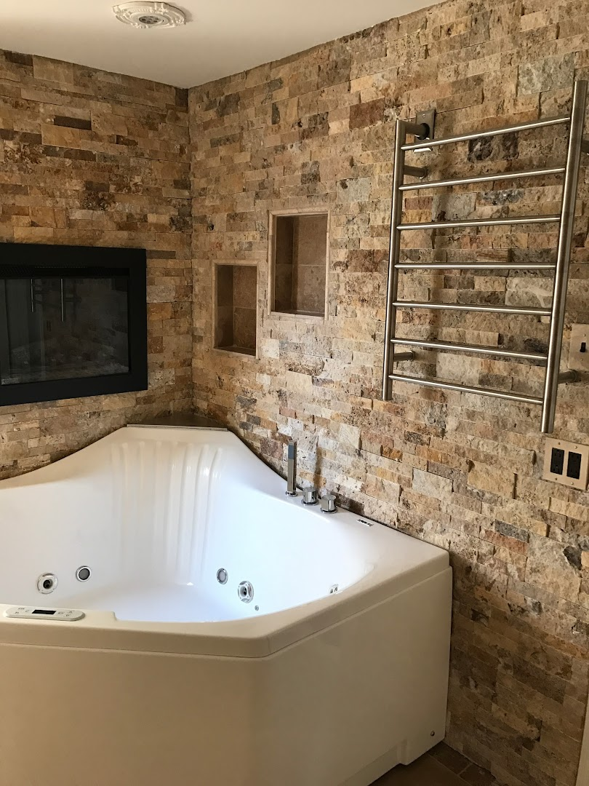
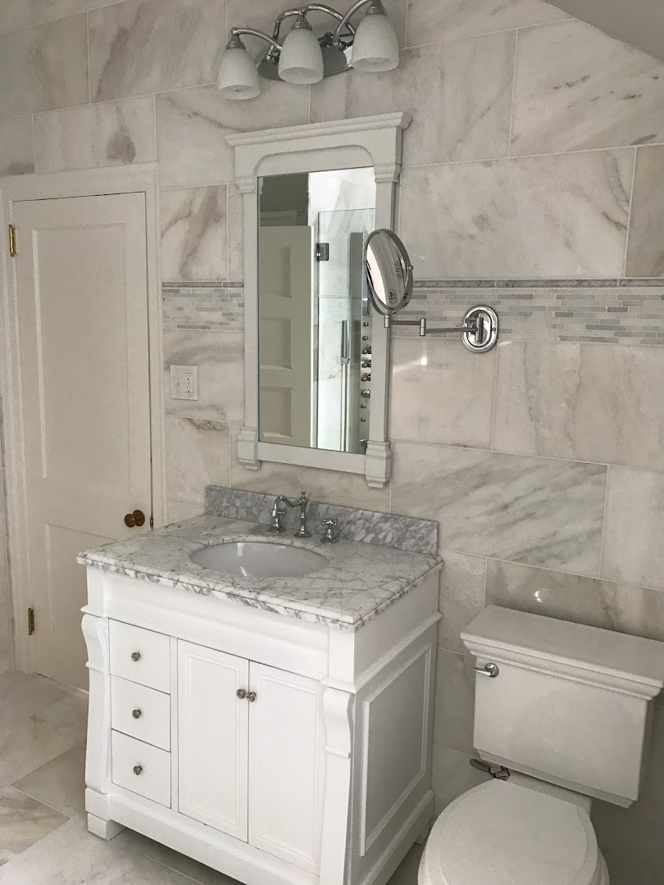
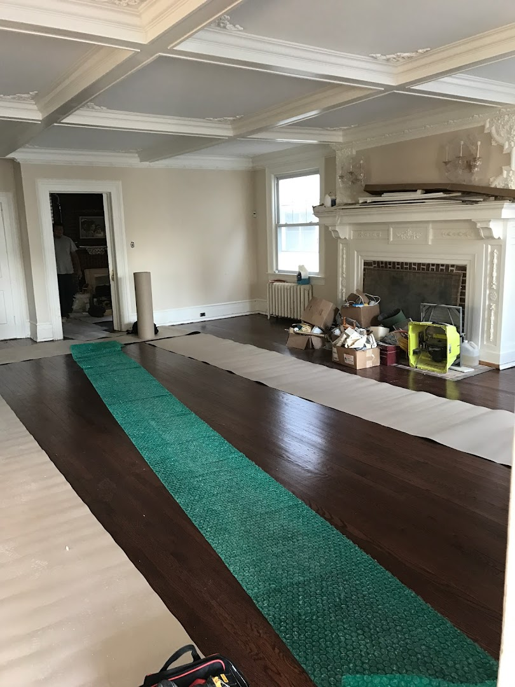

Your local choice for professional home improvement and reliable repair services. Available 24/7 for all your household needs.
Book Now: (609) 674-6115
Complete home renovation and remodeling services to enhance your living space's value and comfort.

Quick fixes for everyday problems. From leaky faucets to electrical repairs, we handle it all with precision.

Tailored installations and custom carpentry work designed to meet your specific home requirements.
Superb Plus Home Improvement & Handyman Services is dedicated to providing the high-quality craftsmanship Atlantic City residents deserve. Led by Andres, our team specializes in quick response times and professional execution.
Whether you need a minor repair or a major remodel, we approach every task with the same level of urgency and meticulous attention to detail. Our 24/7 availability ensures that you're never alone when a home emergency strikes.
Call Andres Today"Needed an install on short notice that required a lot of urgency. Andres and his team were quick to take care of the job. Not only did his team do a great job but they were very professional and easy to do business with."
— James Livingston, Google Review"Great service by these guys, impeccable work at a reasonable price! Felt very at ease with Andres and his team, definitley recommend to anyone who needs some work around the house or is looking to remodel!"
— Jose Sinclair, Google Review